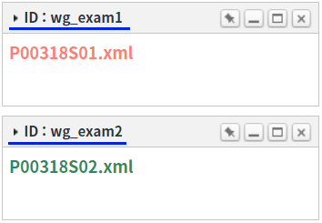

WidgetContainer의 'exportWidget' 메소드와 'exportWidgets' 메소드를 사용하여 위젯의 정보를 반환받는 예제입니다.
예제에서 사용된 메소드는 다음과 같습니다.
exportWidget : 위젯의 ID로 위젯의 정보를 JSON으로 반환합니다.
exportWidgets : 모든 위젯의 정보를 Array로 반환합니다.
위젯의 ID로 위젯의 정보를 반환받기
모든 위젯 정보 반환받기
1
STEP 1: 초기 상태를 확인합니다.
WidgetContainer에 위젯 'ID : wg_exam1', 'ID : wg_exam2'가 추가되어 있습니다. 테스트를 위해 위젯의 타이틀을 위젯의 ID로 표기하였습니다.
Image 1.브라우저(Chrome) 실행 예시

2
STEP 2: 위젯의 ID로 위젯의 정보를 반환받습니다.
"위젯의 ID가 'wg_exam2'인 위젯의 정보 반환받기" 버튼을 클릭합니다.
WidgetContainer에 구성된 위젯 'ID : wg_exam2'가 해당합니다.3
STEP 3: 실행된 결과를 확인합니다.
반환 값이 화면의 로그 확인 Textarea와 브라우저의 개발자 도구의 콘솔(console)탭에 출력됩니다.
Example 1.Log
[15:27:08] # 스크립트 wgc_exam1.exportWidget('wg_exam2'); 반환 값:
{
"id": "wg_exam2",
"src": "/page/P00318S02.xml",
"scope": true,
"minimized": false,
"maximized": false,
"x": 0,
"y": 5,
"unitWidth": 1,
"unitHeight": 5,
"fixed": false,
"oriFixed": false,
"title": "ID : wg_exam2",
"className": "w2widget",
"maximizeFormatter": null,
"buttonFormatter": null,
"titleClass": ""
}1
STEP 1: 초기 상태를 확인합니다.
WidgetContainer에 위젯 'ID : wg_exam1', 'ID : wg_exam2'가 추가되어 있습니다. 테스트를 위해 위젯의 타이틀을 위젯의 ID로 표기하였습니다.
Image 2.브라우저(Chrome) 실행 예시
2
STEP 2: 위젯의 ID로 위젯의 정보를 반환받습니다.
"모든 위젯 정보 반환받기" 버튼을 클릭합니다.3
STEP 3: 실행된 결과를 확인합니다.
반환 값이 화면의 로그 확인 textarea 또는 브라우저의 개발자 도구의 콘솔(console)탭에 출력됩니다.
Example 2.Log
[15:29:22] # 스크립트 wgc_exam1.exportWidgets(); 반환 값:
[
{
"id": "wg_exam1",
"src": "/page/P00318S01.xml",
"scope": true,
"minimized": false,
"maximized": false,
"x": 0,
"y": 0,
"unitWidth": 1,
"unitHeight": 5,
"fixed": false,
"oriFixed": false,
"title": "ID : wg_exam1",
"className": "w2widget",
"maximizeFormatter": null,
"buttonFormatter": null,
"titleClass": ""
},
{
"id": "wg_exam2",
"src": "/page/P00318S02.xml",
"scope": true,
"minimized": false,
"maximized": false,
"x": 0,
"y": 5,
"unitWidth": 1,
"unitHeight": 5,
"fixed": false,
"oriFixed": false,
"title": "ID : wg_exam2",
"className": "w2widget",
"maximizeFormatter": null,
"buttonFormatter": null,
"titleClass": ""
}
]WidgetContainer의 'exportWidget' 메소드를 사용하여 스크립트를 작성합니다. 'exportWidget' 메소드의 첫 번째 인자에 위젯의 ID를 할당합니다. 세부 설정은 아래의 스크립트 예시에 작성되어 있습니다.
Example 3.Script
// WidgetContainer 'wgc_exam1'에 추가된 위젯의 ID가 'wg_exam2'인 위젯의 정보를 반환받습니다. var result = wgc_exam1.exportWidget("wg_exam2"); // 반환 값 예시) // { // "id": "wg_exam2", // "src": "/page/P00318S02.xml", // "scope": true, // "minimized": false, // "maximized": false, // "x": 0, // "y": 5, // "unitWidth": 1, // "unitHeight": 5, // "fixed": false, // "oriFixed": false, // "title": "ID : wg_exam2", // "className": "w2widget", // "maximizeFormatter": null, // "buttonFormatter": null, // "titleClass": "" // } // 위젯의 ID는 메소드 'addWidgets' 호출 시 옵션 'id'에 할당한 값입니다. // 위젯 추가 시 스크립트 예시 wgc_exam1.addWidgets( { id: "wg_exam2", src: "/page/P00318S02.xml", title: "ID : wg_exam2", x: 0, y: 6, scope: true, unitWidth: 1, unitHeight: 5 } );
WidgetContainer의 'exportWidgets' 메소드를 사용하여 스크립트를 작성합니다. 세부 설정은 아래의 스크립트 예시에 작성되어 있습니다.
Example 4.Script
// WidgetContainer 'wgc_exam1'에 추가된 모든 위젯의 정보를 배열로 반환받습니다. var result = wgc_exam1.exportWidgets(); // 반환 값 예시) // [ // { // "id": "wg_exam1", // "src": "/page/P00318S01.xml", // "scope": true, // "minimized": false, // "maximized": false, // "x": 0, // "y": 0, // "unitWidth": 1, // "unitHeight": 5, // "fixed": false, // "oriFixed": false, // "title": "ID : wg_exam1", // "className": "w2widget", // "maximizeFormatter": null, // "buttonFormatter": null, // "titleClass": "" // }, // { // "id": "wg_exam2", // "src": "/page/P00318S02.xml", // "scope": true, // "minimized": false, // "maximized": false, // "x": 0, // "y": 5, // "unitWidth": 1, // "unitHeight": 5, // "fixed": false, // "oriFixed": false, // "title": "ID : wg_exam2", // "className": "w2widget", // "maximizeFormatter": null, // "buttonFormatter": null, // "titleClass": "" // } // ]
exportWidget( widgetId )
exportWidgets( )